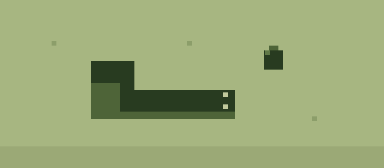
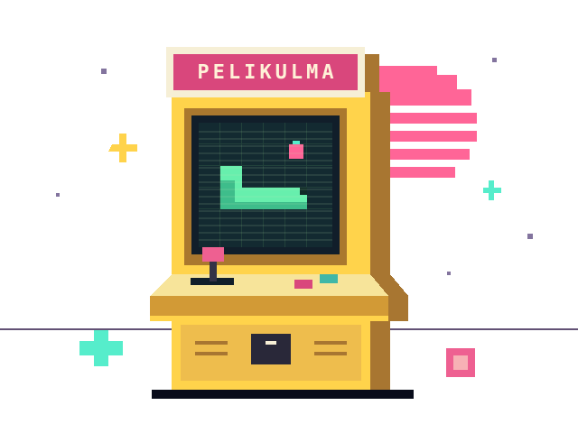
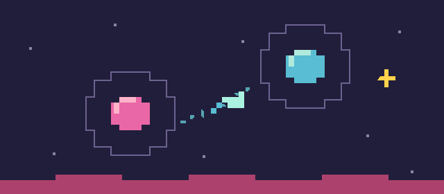
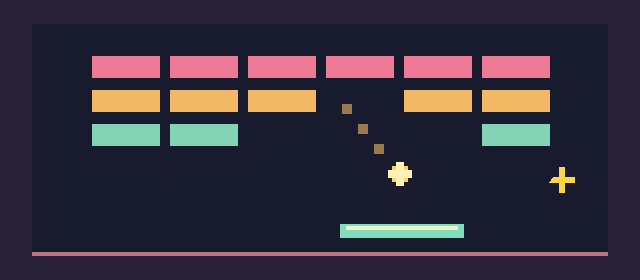
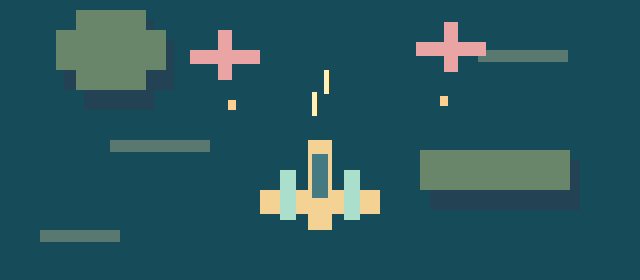

01 / RETROREMIXMATO
KLASSIKKO, OMA TWISTIVanhan puhelimen mato. Pelaa perinteistä tai nappaa häntä lyhyemmäksi Taskutwistissä.
TERVETULOA PELIKULMAAN
Retrosuosikkien omia versioita ja ihan uusia peli-ideoita. Lyhyitä pelituokioita, vielä yksi yritys ja se ikioma ennätys.
Puhelin · Tabletti · Tietokone

PELIVALIKKO / SELECT GAME

01 / RETROREMIXVanhan puhelimen mato. Pelaa perinteistä tai nappaa häntä lyhyemmäksi Taskutwistissä.

02 / OMA PELIPlaneetalta toiselle, valoa kohti. Ajoita lähtö ja pysy nousevan pimeyden edellä.

03 / RETROREMIXMaila, pallo ja kuusi kenttää. Lataa kipinä ja päätä, milloin murskaat palikoiden läpi.

04 / OMA KAMPANJAMuodostelmia, siipikoneita ja kolme väistöä. Kerää tulivoimaa viiden alueen lentokampanjassa.
Ennätyksesi tallentuvat tähän selaimeen. Sinun pelisi, sinun pisteesi.
MIKÄ IHMEEN PELIKULMA?
Paikka omille pienille peleille. Osa lainaa ideansa retroklassikoista, osa lähtee ihan omille kiertoradoilleen. Yhteistä on helppo aloitus ja halu kokeilla vielä kerran.
Mukana puhelinmatoa, avaruuslentoja ja palikoiden murskaamista. Uusille kokeiluille on aina tilaa.